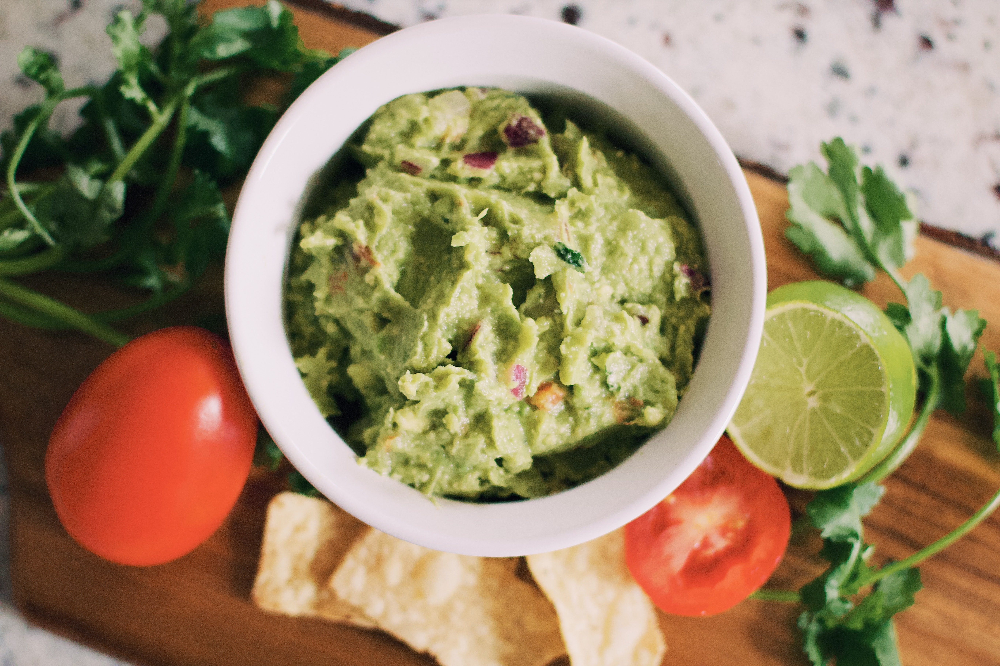

Back to recipe index
Rustic Guacamole

Photo by Tessa
Rampersad on Unsplash
About this Recipe:
Who doesn't like guacamole? Ours comes with a little kick to start your meal off right!
Equipment Needed:
- Chef's knife
- Cutting board
- Mixing bowl
Ingredients Needed:
- 3 large avocados
- 1 tomato
- 3 green onions
- 2 limes
- Salt
- Pepper
- 1/2 bunch of cilantro
- Hot sauce
Directions:
- Remove seeds and pulp from tomato and roughly chop
- Thinly slice the green onions
- Peel avocados
- Add avocado, tomato, green onion, cilantro, and hot sauce to mixing bowl
- Slice limes in half and squeeze the juice into the mixing bowl
- Mash/mix the ingredients into a good paste
- Salt & pepper to taste
- Serve and enjoy